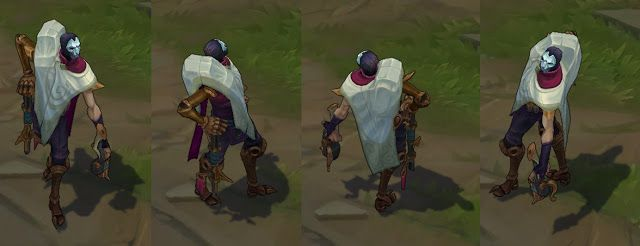

Jhin is a criminal who finds pleasure in killing. He believes that murder is an art. He uses his gun, whisper as his brush and makes masterpieces of cruel brutality. Once a prisoner, who was freed by Ionias ruling council, is now their Cabal's assassin.

Jhin is an ADC Marksman, his gameplay technic revolves around his unique auto attack system. For Jhin you need to be aware of your surroundings and be able to kite enemies. Two very important abilities in his kit also rely on your aim, so you need to have some decent aim to use them well.